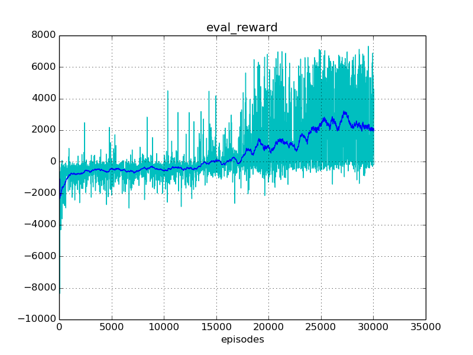
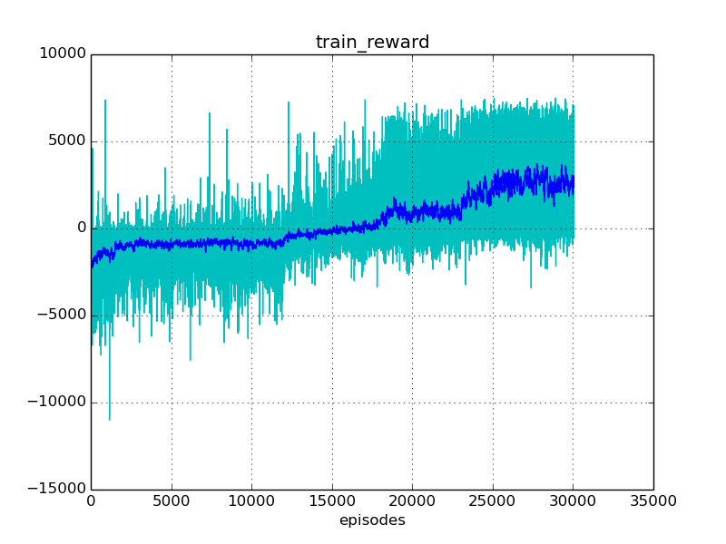
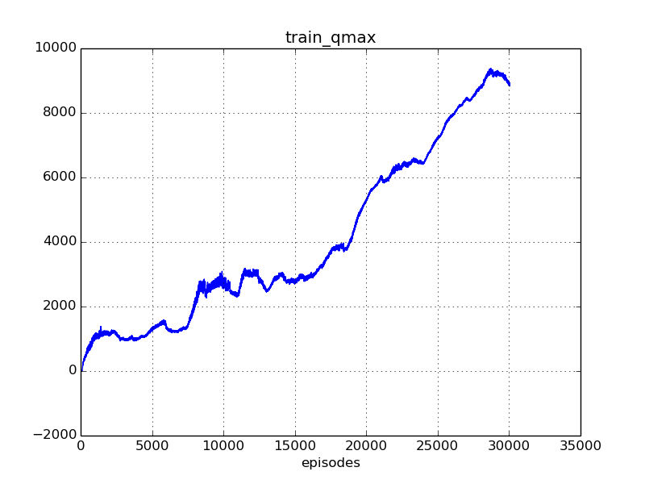
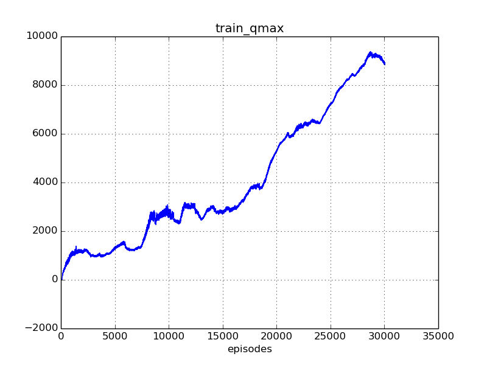

Experiment #scorpion_001
Reward: 1963
Qmax: 8889
Left: 02:43:37 (86%)
Report time: 2016-12-11 16:48:13
Host name: bernard
Configuration
Experiment:
exp.agent_class: core.mujoco_agent.MujocoAgent
exp.base_path: ../../out/experiments
exp.episodes: 35000
exp.id: scorpion_001
exp.logger_class: core.reporter.Reporter
exp.mind_class: core.ddpg_mind.DdpgMind
exp.platform_class: core.tensorflow_platform.TensorflowPlatform
exp.save_every_episodes: 200
exp.steps: 75
exp.world_class: env.tentacle_world.TentacleWorld
Algorithm:
alg.batch_size: 512
alg.buffer_size: 100000
alg.noise_rate_method: const_01
alg.noise_sigma: 0.1
alg.noise_theta: 0.01
Mind:
mind.evaluate_every_episodes: 10
Environment:
env.model_agent_path: ../../env/assets/scorpion_agent.xml
env.model_world_path: ../../env/assets/scorpion_world.xml
env.reward_method: default_reward
env.target_location_method: random_target
env.target_mouse_control: False
env.target_range_xz: [1.0, 1.0]
Reporting:
report.diagram_mean_frame: 50
report.refresh_html_every_secs: 30
report.summary_every_episodes: 20
report.write_every_episodes: 5
Instances
Experiment:
id: scorpion_001
work_path: ../../out/experiments/scorpion_001
platform: TensorflowPlatform
world: TentacleWorld:
id: Zoo:Mujoco:Tentacle-v1
model_path: ../../env/assets/scorpion_world.xml
obs_dim: 10
act_box: [-200. -150. -50.]
[ 200. 150. 50.]
agent: MujocoAgent:
model_path: ../../env/assets/scorpion_agent.xml
mind: DdpgMind:
algorithm: DDPG_PeterKovacs
buffer: ReplayBuffer:
buffer_size: 100000
num_experiences: 100000
episode: 30054
logger: Reporter:
saved_time: 16:32:31
train_history: 30054
evaluation_history: 3003
Progress
Episodes: 30054
Steps: 2254050
Total time: 19:17:49
spent: 16:34:12 (85%)
left: 02:43:37
Finish: 19:31:50 2016-12-11
Performance: 0.50 per sec
Results
Train reward: +2953.15
Eval reward: +1962.58
Diagrams


 
